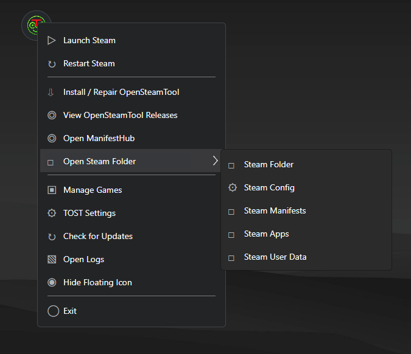
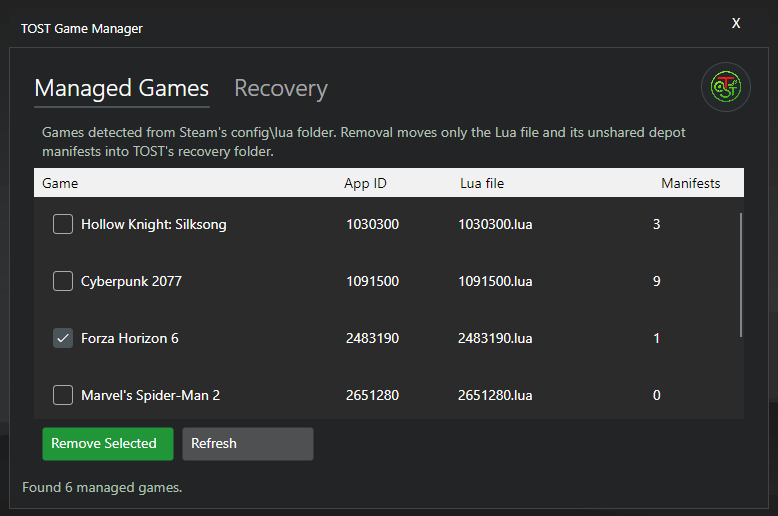

Windows
x64Use Setup for shortcuts and automatic updates, or run Portable instantly.
Open-source Steam integration manager for Windows and Linux
The same compact interface on both platforms: BetterSteamTools on Windows and SLSsteam on Linux, complete with a floating drag-and-drop icon, Game Manager, and Steam CDN downloader.
GPL-3.0 licensed — inspect the source, report issues, or build it yourself.

Menu
Game ManagerSeamless manifest routing, automated engine management, and direct Steam CDN downloading without manual file gymnastics.
Right-click the floating icon to instantly install and configure BetterSteamTools on Windows, or SLSsteam on Linux (Native & Flatpak). Zero manual TOML editing.
Automated Injection
Drop .zip, .lua, or .manifest files onto the floating widget. TOST unpacks and routes manifests to depotcache/, Lua scripts to stplug-in/, and registers keys in config.vdf.
Integrated with DepotDownloaderMod. Directly downloads game depots from Steam CDN with real-time transfer speeds, dual progress bars, and ETA calculations.
Browse your library with official Steam box art, check installation state, launch with one-click ▶ Play, open game directories, and uninstall cleanly.
TOST never blindly modifies your Steam configuration. All key merges and launch file adjustments generate atomic backups so you can revert anytime with zero risk.
Safe & Non-Destructive
Includes background auto-updates via Velopack for Windows Setup, standalone portable archives, and a dedicated headless CLI (tost) for Linux.
Detecting the best release for your device…
View available downloadsAll x64 Builds
Use Setup for shortcuts and automatic updates, or run Portable instantly.
Use AppImage for universal compatibility, or select a native distribution package.
TOST favors inspectable open-source code, explicit local file selection, and visible changes instead of closed-source black boxes.
| Feature | TOST | BetterSteamTools / OST | SteamTools (Legacy) |
|---|---|---|---|
| What it is | Open-source GUI manager, engine injector & CDN downloader | Open-source community hooking engine | Closed-source abandoned tool |
| Platform support | Windows 10+ and Linux x64 | Windows & Linux | Windows only |
| Transparency | 100% Open-source (GPL-3.0) | 100% Open-source | Closed-source / Unknown binaries |
| How to install engine | Right-click floating icon → Apply OST (Windows) or Apply SLSsteam (Linux) | Manual copy & editing config files | Standard setup only (no portable) |
| Standout feature | Floating icon, drag-and-drop, Game Manager with Steam art, and built-in CDN downloader | No interface of its own (background DLL) | Floating icon with decent Steam controls |
| When Steam updates | Just click Apply again — automatic recovery and re-injection | Depends on maintainers to update runtime | Frequently broke, users had to find workarounds |
| Safety & Privacy | Automatic backups of all edited configs; only touches files on explicit user action | Just a runtime, no installer-side risk | Reported telemetry and remote execution backdoors in older versions |
TOST is an independent Trionine open-source project. It is not affiliated with, endorsed by, or connected to Valve, Steam, OpenSteamTool, BetterSteamTools, or SLSsteam. Steam is a trademark of Valve Corporation.